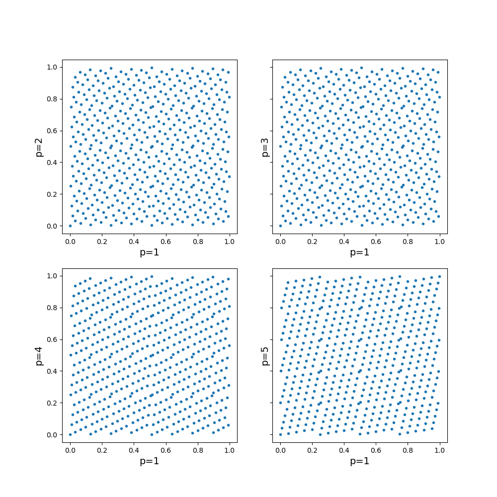

Note
Click here to download the full example code
Hammersley 2D-plane¶
Hammersley points are a series of pseudo random points with a low discrepancy that are suitable for use in solid state NMR simulations where powder averaging is performed.
References¶
- Hammersley, J. M.; Handscomb, D. C. (1964). Monte Carlo Methods. doi:10.1007/978-94-009-5819-7
- Tien-Tsin Wong, Wai-Shing Luk & Pheng-Ann Heng (1997) Sampling with Hammersley and Halton Points, Journal of Graphics Tools, 2:2, 9-24, doi: 10.1080/10867651.1997.10487471
Examples of Hammersley points for tiling a 2-D plane¶
import numpy as np
from matplotlib import pyplot as plt
def return_point(m, n, p):
"""
m is the index number of the Hammersley point to calculate
n is the maximun number of points
p is the order of the Hammersley point, 1,2,3,4,... etc
l is the power of x to go out to and is hard coded to 10 in this example
:return type double
"""
if p == 1:
return m / n
v = 0.0
for j in range(10, -1, -1):
num = m // p ** j
if num > 0:
m -= num * p ** j
v += num / (p ** (j + 1))
return (v)
if __name__ == "__main__":
npts = 500
h_1 = np.zeros(npts)
h_2 = np.zeros(npts)
h_3 = np.zeros(npts)
h_4 = np.zeros(npts)
h_5 = np.zeros(npts)
h_7 = np.zeros(npts)
for m in range(npts):
h_1[m] = return_point(m, npts, 1)
h_2[m] = return_point(m, npts, 2)
h_3[m] = return_point(m, npts, 3)
h_4[m] = return_point(m, npts, 4)
h_5[m] = return_point(m, npts, 5)
h_7[m] = return_point(m, npts, 7)
fig, axs = plt.subplots(2, 2, figsize=(10, 10), sharey=True)
ax =axs.flatten()
ax[0].plot(h_1, h_2, '.')
ax[1].plot(h_1, h_2, '.')
ax[2].plot(h_1, h_4, '.')
ax[3].plot(h_1, h_5, '.')
ax[0].set_xlabel("p=1", fontsize=14)
ax[0].set_ylabel("p=2", fontsize=14)
ax[1].set_xlabel("p=1", fontsize=14)
ax[1].set_ylabel("p=3", fontsize=14)
ax[2].set_xlabel("p=1", fontsize=14)
ax[2].set_ylabel("p=4", fontsize=14);
ax[3].set_xlabel("p=1", fontsize=14)
ax[3].set_ylabel("p=5", fontsize=14);
plt.show()
Total running time of the script: ( 0 minutes 0.230 seconds)